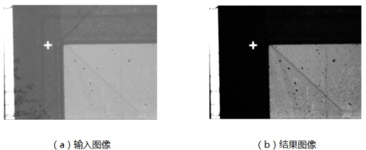
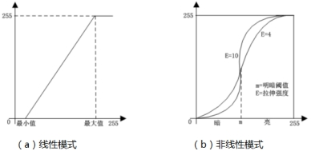

Tăng cường độ tương phản là một trong những phương pháp xử lý ảnh sơ bộ thường dùng, nhiệm vụ chính là tăng cường độ tương phản của ảnh thông qua biến đổi giãn xám.

| Phân loại | Tên tham số | Mô tả tham số |
|---|---|---|
| Cửa sổ thuộc tính | Phương pháp tăng cường | Gồm có chế độ tuyến tính và phi tuyến tính. |
| Giá trị nhỏ nhất | Dùng để thiết lập giá trị nhỏ nhất trong chế độ tuyến tính. | |
| Giá trị lớn nhất | Dùng để thiết lập giá trị lớn nhất trong chế độ tuyến tính. | |
| Ngưỡng sáng tối | Xem phần nguyên lý hoạt động. | |
| Cường độ kéo giãn | Xem phần nguyên lý hoạt động. | |
| Cửa sổ hình ảnh | Ảnh đầu vào | Ảnh cần được tăng cường độ tương phản. |
| Chuỗi dữ liệu | Ảnh đầu vào | Ảnh cần được tăng cường độ tương phản. |
| Giao diện nâng cao | Không | Không |
| Phân loại | Tên tham số | Mô tả tham số |
|---|---|---|
| Cửa sổ giám sát | Ảnh đầu vào | Ảnh cần được tăng cường độ tương phản. |
| Ảnh đầu ra | Ảnh sau khi được tăng cường độ tương phản. | |
| Kết quả thực thi | Kết quả thực thi của công cụ. | |
| Thời gian thực thi | Thời gian thực thi của công cụ. | |
| Cửa sổ hình ảnh | Ảnh đầu ra | Ảnh sau khi được tăng cường độ tương phản. |
| Kết quả thực thi | Hiển thị kết quả thực thi công cụ: thành công hiển thị “OK”, thất bại hiển thị “NG”, giống với tham số kết quả thực thi trong cửa sổ giám sát. | |
| Chuỗi dữ liệu | Ảnh đầu ra | Ảnh sau khi được tăng cường độ tương phản. |

Bản chất của công cụ tăng cường độ tương phản là thực hiện biến đổi giãn xám trên ảnh, bao gồm hai chế độ: chế độ tuyến tính (tương ứng với giãn tuyến tính) và chế độ phi tuyến tính (tương ứng với giãn phi tuyến). Nguyên lý cơ bản như Hình 2. Trong giãn tuyến tính, dựa trên giá trị nhỏ nhất và lớn nhất được chỉ định, các giá trị nằm trong khoảng này sẽ được ánh xạ tuyến tính về khoảng 0~255. Trong khi đó, giãn phi tuyến sử dụng hàm ánh xạ dạng “S” xác định bởi giá trị m và E: phần nhỏ hơn m tương ứng với vùng tối, lớn hơn m tương ứng với vùng sáng. Các giá trị dưới (hoặc trên) m sẽ bị nén vào phạm vi hẹp gần màu đen (hoặc trắng).
| Tình huống ứng dụng | Hiệu quả mong muốn | Tham số cần điều chỉnh |
|---|---|---|
| Ảnh có độ tương phản thấp | Tăng tuyến tính độ tương phản trong một phạm vi nhất định | Điều chỉnh giá trị nhỏ nhất và lớn nhất tương ứng |
| Ảnh có độ tương phản thấp, hơi tối | Tăng độ sáng và độ tương phản | Điều chỉnh m về giá trị nhỏ hơn, nếu cần thì tăng giá trị E |
| Ảnh có độ tương phản thấp, hơi sáng | Giảm độ sáng và tăng độ tương phản | Điều chỉnh m về giá trị lớn hơn, nếu cần thì tăng giá trị E |
Xem “\Samples\对比度变换相关.gvp”.